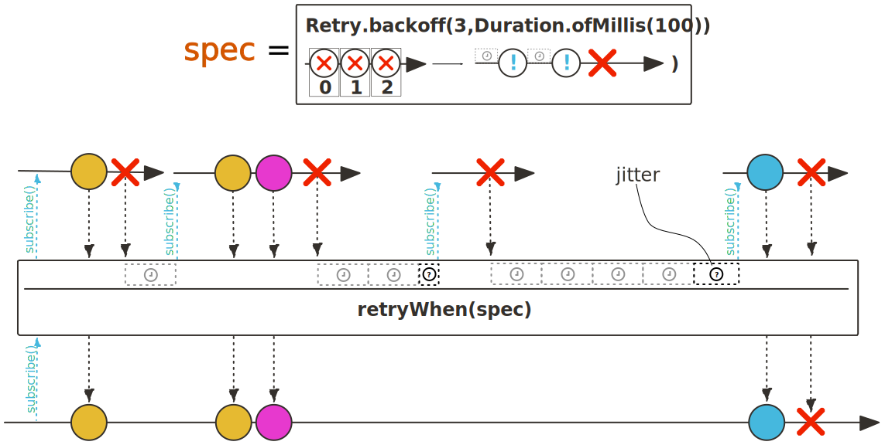
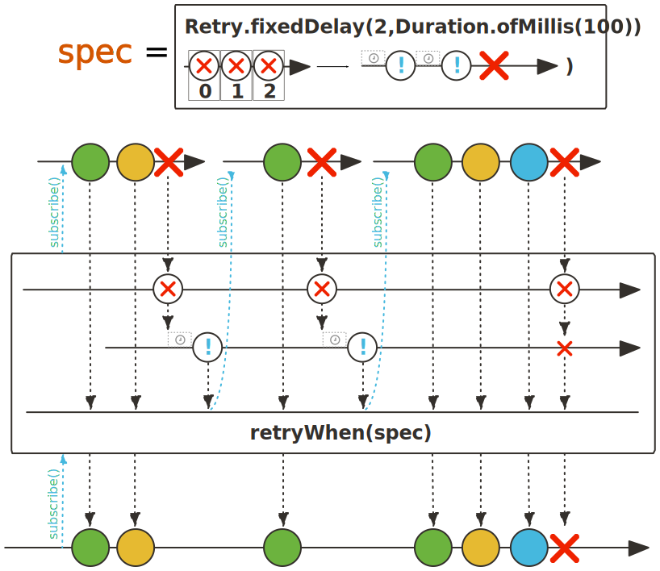
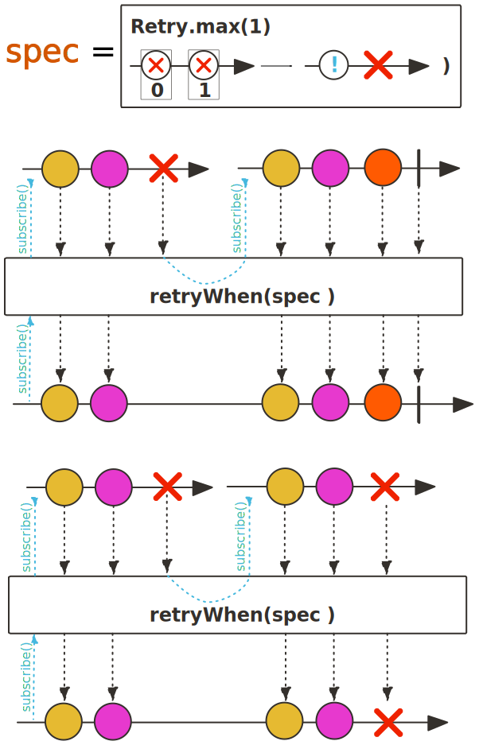
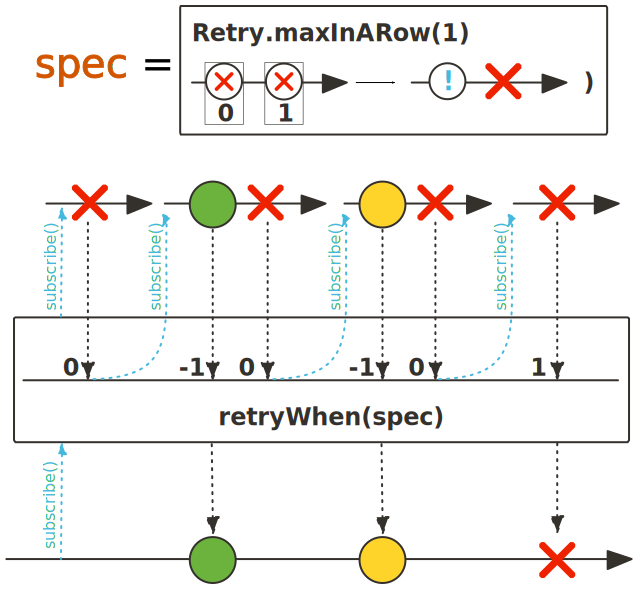

public abstract class Retry extends Object
Flux of Retry.RetrySignal,
for use with Flux.retryWhen(Retry) and Mono.retryWhen(Retry).
Also provides access to configurable built-in strategies via static factory methods:
Users are encouraged to provide either concrete custom Retry strategies or builders that produce
such concrete Retry. The RetrySpec returned by e.g. max(long) is a good inspiration
for a fluent approach that generates a Retry at each step and uses immutability/copy-on-write to enable
sharing of intermediate steps (that can thus be considered templates).
| Modifier and Type | Class and Description |
|---|---|
static interface |
Retry.RetrySignal
State used in
Flux.retryWhen(Retry) and Mono.retryWhen(Retry),
providing the Throwable that caused the source to fail as well as counters keeping track of retries. |
| Modifier and Type | Field and Description |
|---|---|
ContextView |
retryContext |
| Modifier | Constructor and Description |
|---|---|
|
Retry() |
protected |
Retry(ContextView retryContext) |
| Modifier and Type | Method and Description |
|---|---|
static RetryBackoffSpec |
backoff(long maxAttempts,
Duration minBackoff)
A
RetryBackoffSpec preconfigured for exponential backoff strategy with jitter, given a maximum number of retry attempts
and a minimum Duration for the backoff. |
static RetryBackoffSpec |
fixedDelay(long maxAttempts,
Duration fixedDelay)
A
RetryBackoffSpec preconfigured for fixed delays (min backoff equals max backoff, no jitter), given a maximum number of retry attempts
and the fixed Duration for the backoff. |
static Retry |
from(Function<Flux<Retry.RetrySignal>,? extends Publisher<?>> function)
|
abstract Publisher<?> |
generateCompanion(Flux<Retry.RetrySignal> retrySignals)
Generates the companion publisher responsible for reacting to incoming
Retry.RetrySignal emissions, effectively
deciding when to retry. |
static RetrySpec |
indefinitely()
A
RetrySpec preconfigured for the most simplistic retry strategy: retry immediately and indefinitely
(similar to Flux.retry()). |
static RetrySpec |
max(long max)
A
RetrySpec preconfigured for a simple strategy with maximum number of retry attempts. |
static RetrySpec |
maxInARow(long maxInARow)
A
RetrySpec preconfigured for a simple strategy with maximum number of retry attempts over
subsequent transient errors. |
ContextView |
retryContext()
Return the user provided context that was set at construction time.
|
static Retry |
withThrowable(Function<Flux<Throwable>,? extends Publisher<?>> function)
|
public final ContextView retryContext
public Retry()
protected Retry(ContextView retryContext)
public abstract Publisher<?> generateCompanion(Flux<Retry.RetrySignal> retrySignals)
Retry.RetrySignal emissions, effectively
deciding when to retry.
When the source signals an error, that onError signal
will be suppressed. Its Throwable will instead be attached to a Retry.RetrySignal, immediately emitted
on the retrySignals publisher. Right after that emission,
request(1) is called on the companion publisher.
The response to that request decides if a retry should be made. Thus, the outer publisher will wait until a signal is emitted by the companion publisher, making it possible to delay retry attempts.
Any
onNext emitted by the companion publisher triggers a retry,
onError will fail the outer publisher and
onComplete will complete the outer publisher (effectively
suppressing the original error/Throwable).
As an example, the simplest form of retry companion would be to return the incoming Flux of Retry.RetrySignal
without modification. This would render a retry strategy that immediately retries, forever.
retrySignals - the errors from the outer publisher as Retry.RetrySignal objects,
containing the Throwable causing the error as well as retry counter metadata.Retry.RetrySignal emissions,
effectively deciding when to retry.public ContextView retryContext()
Retry.RetrySignal.retryContextView().public static RetryBackoffSpec backoff(long maxAttempts, Duration minBackoff)
RetryBackoffSpec preconfigured for exponential backoff strategy with jitter, given a maximum number of retry attempts
and a minimum Duration for the backoff.

maxAttempts - the maximum number of retry attempts to allowminBackoff - the minimum Duration for the first backoffRetryBackoffSpec.maxAttempts(long),
RetryBackoffSpec.minBackoff(Duration)public static RetryBackoffSpec fixedDelay(long maxAttempts, Duration fixedDelay)
RetryBackoffSpec preconfigured for fixed delays (min backoff equals max backoff, no jitter), given a maximum number of retry attempts
and the fixed Duration for the backoff.

Note that calling RetryBackoffSpec.minBackoff(Duration) or RetryBackoffSpec.maxBackoff(Duration) would switch
back to an exponential backoff strategy.
maxAttempts - the maximum number of retry attempts to allowfixedDelay - the Duration of the fixed delaysRetryBackoffSpec.maxAttempts(long),
RetryBackoffSpec.minBackoff(Duration),
RetryBackoffSpec.maxBackoff(Duration)public static RetrySpec max(long max)
RetrySpec preconfigured for a simple strategy with maximum number of retry attempts.

max - the maximum number of retry attempts to allowRetrySpec.maxAttempts(long)public static RetrySpec maxInARow(long maxInARow)
RetrySpec preconfigured for a simple strategy with maximum number of retry attempts over
subsequent transient errors. An Subscriber.onNext(Object) between
errors resets the counter (see RetrySpec.transientErrors(boolean)).

maxInARow - the maximum number of retry attempts to allow in a row, reset by successful onNextRetrySpec.maxAttempts(long),
RetrySpec.transientErrors(boolean)public static RetrySpec indefinitely()
RetrySpec preconfigured for the most simplistic retry strategy: retry immediately and indefinitely
(similar to Flux.retry()).public static final Retry from(Function<Flux<Retry.RetrySignal>,? extends Publisher<?>> function)